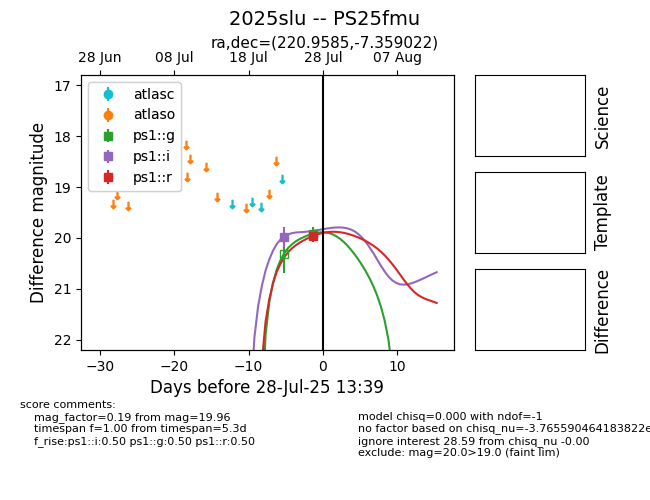

Target 2025slu at 2025-08-07 11:09, see:
TNS: wis-tns.org/object/2025slu
YSE: ziggy.ucolick.org/yse/transient_detail/2025slu
alt names
2025slu (yse,tns)
PS25fmu (panstarrs)
coordinates:
equatorial (ra, dec) = (220.9585,-7.35902)
galactic (l, b) = (345.2560,+46.07245)
photometry
last ps1::g=19.91, ps1::i=19.98, ps1::r=19.96
1 ps1::g, 1 ps1::i, 1 ps1::r detections
